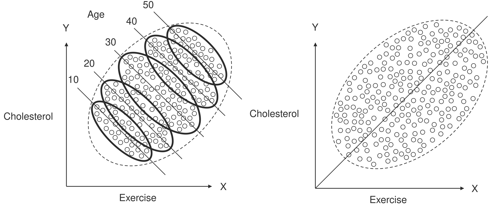
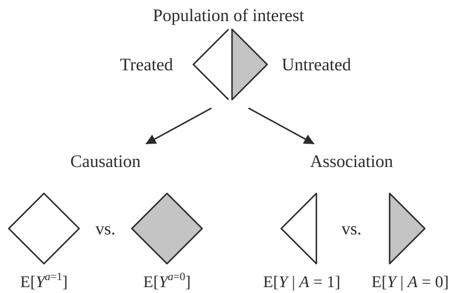
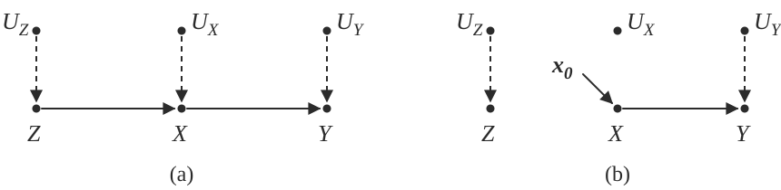
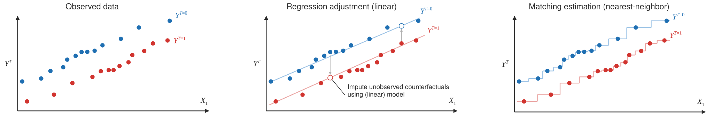
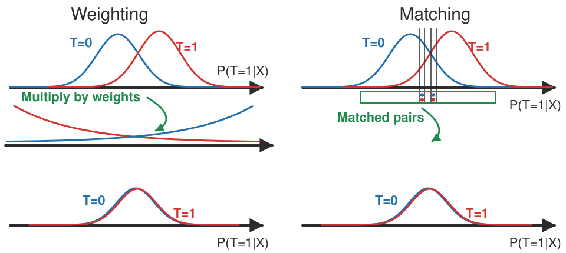

4.5. causal inference#
Some notes on causal inference both from the following resources:
introductory courses following neyman-rubin framework at UC Berkeley
the textbook What if (hernan & robins)
the book of why
in-progress book by brady neal
course notes by stefan wager
rebecca barter’s blog posts
wonderful review / intro paper (guo et al. 2020)
4.5.1. basics#
confounding = difference between groups other than the treatment which affects the response
this is the key problem when using observational (non-experimental) data to make causal inferences
problem occurs because we don’t get to see counterfactuals
ex from Pearl where Age is the confounder

potential outcomes = counterfactual outcomes \(Y^{t=1}, Y^{t=0}\)
treatment = intervention, exposure, action
potential outcomes are often alternatively written as \(Y(1)\) and \(Y(0\)) or \(Y_1\) and \(Y_0\)
alternatively, $\(P(Y=y\vert do(T=1))\)\( and \)\(P(Y=y\vert do(T=0))\)\( or \)\(P(Y=y\vert set(T=1))\)\( and \)\(P(Y=y\vert set(T=0))\)$
treatment \(T\) and outcome \(Y\) (from “What If”):

different approaches to causal analysis
experimental design: collect data in a way that enables causal conclusions
ex. randomized control trial (RCT) - controls for any possible confounders
quasi-experiments: without explicit random assignment, some data pecularity approximates randomization
ex. regression discontinuity analysis
ex. instrumental variables - variable which can be used to effectively due a RCT because it was made random by some external factor
post-hoc analysis: by arguing that certain assumptions hold, we can draw causal conclusions from non-observational data
ex. regression-based adjustment after assuming ignorability
some assumptions are not checkable, and we can only reason about how badly they can go wrong (e.g. using sensitivity analysis)
background
very hard to decide what to include and what is irrelevant
epiphenomenon - a correlated effect (not a cause)
a secondary effect or byproduct that arises from but does not causally influence a process
ontology - study of being, concepts, categories
nodes in graphs must refer to stable concepts
ontologies are not always stable
world changes over time
“looping effect” - social categories (like race) are constantly chainging because people who putatively fall into such categories to change their behavior in possibly unexpected ways
epistemology - theory of knowledge
clear distinction between identification and estimation (and third problem is discovery - what is the structure?)
a causal quantity is identifiable if we can compute it from a purely statistical quantity
4.5.1.1. intuition#
bradford hill criteria - some simple criteria for establishing causality (e.g. strength, consistency, specificity)
association is circumstantial evidence for causation
no causation without manipulation (rubin, 1975; Holland, 1986)
in this manner, something like causal effect of race/gender doesn’t make sense
can partially get around this by changing race \(\to\) perceived race
weaker view (e.g. of Pearl) is that we only need to be able to understand how entities interact (e.g. write an SEM)
different levels
experiment: experiment, RCT, natural experiment, observation
evidence: marginal correlation, regression, invariance, causal
inference (pearl’s ladder of causality): prediction/association, intervention, counterfactuals
kosuke imai’s levels of inference: descriptive, predictive, causal
4.5.1.2. measures of association#
correlation
regression coefficient
risk difference = $\(P(Y=1\vert T=1) - P(Y=1\vert T=0)\)$
risk ratio = relative risk = $\(P(Y=1\vert T=1) / P(Y=1\vert T=0)\)$
odds ratio = $\(\frac{P(Y=1\vert T=1) / P(Y=0\vert T=1)}{P(Y=1\vert T=0) / P(Y=0\vert T=0)}\)$
measures association (1 is independent, >1 is positive association, <1 is negative association)
odds that \(P(Y=1)\) = \(P(Y=1)/P(Y \neq 1)\)
4.5.1.3. causal ladder (different levels of inference)#
prediction/association $\(P(Y\vert T)\)$
only requires joint distr. of the variables
intervention $\(P(Y^{T=t}) = P(Y\vert do(T=t))\)$
we can change things and get conditionals based on evidence after intervention
represents the conditional distr. we would get if we were to manipulate \(t\) in a randomized trial
to get this, we assume the causal structure (can still kind of test it based on conditional distrs.)
having assumed the structure, we delete all edges going into a do operator and set the value of \(x\)
then, do-calculus yields a formula to estimate $\(p(y\vert do(x))\)$ assuming this causal structure
see introductory paper here, more detailed paper here (pearl 2013)
by assuming structure, we learn how large impacts are
counterfactuals $\(P(Y^{T=t'} = y'\vert T=t, y=y)\)$
we can change things and get conditionals based on evidence before intervention
instead of intervention $\(p(y\vert do(x))\)\( we get \)\(p(y^*\vert x^*, u=u)\)\( where \)u\( represents fixing all the other variables and \)\(y^*\)\( and \)x^*$ are not observed
averaging over all data points, we’d expect to get something similar to the intervention $\(p(y\vert do(x))\)$
probabalistic answer to a “what would have happened if” question
e.g. “Given that Hillary lost and didn’t visit Michigan, would she win if she had visited Michigan?”
e.g. “What fraction of patients who are treated and died would have survived if they were not treated?”
this allows for our intervention to contradict something we condition on
simple matching is often not sufficient (need a very good model for how to match, hopefully a causal one)
key difference with standard intervention is that we incorporate available evidence into our calculation
available evidence influences exogenous variables
this is for a specific data point, not a randomly sampled data point like an intervention would be
requires SEM, not just causal graph
4.5.2. frameworks#
4.5.2.1. fisher randomization test#
this framework seeks evidence against the null hypothesis (e.g. that there is no causal effect)
fisher null hypothesis: \(H_{0F}: Y_i^{T=0} = Y_i^{T=1}\quad \forall i\)
also called strong null hypothesis = sharp null hypothesis (Rubin, 1980)
weak null hypothesis would be \(\bar Y_i^{T=0} = Y_i^{T=1}\)
can work for any test statistic \(test\)
only randomness comes from treatment variable - this allows us to get randomization distribution for a test-statistic \(test(T, Y^{T=1}, Y^{T=0})\)
this yields \(p\)-values: $\(p= \frac 1 M \sum_{m=1}^M \mathbb 1 \{ test(\mathbf t^m, \mathbf Y) \geq test (\mathbf T, \mathbf Y) \}\)$
can approximate this with Monte Carlo permutation test, with \(R\) random permutations of \(\mathbf T\): $\(p= \frac 1 R \sum_r \mathbb 1 \{ test(\mathbf t^r, \mathbf Y) \geq test (\mathbf T, \mathbf Y) \}\)$
canonical choices of test-statistic
difference in means: \(\hat \tau = \hat{\bar{Y}}^{T=1} - \hat{\bar{Y}}^{T=0}\)
\(= \frac 1 {n_1} \sum_i T_i Y_i - \frac 1 {n_0} \sum_i (1 - T_i) Y_i\)
\(= \frac 1 {n_1} \sum_{T_i=1} Y_i - \frac 1 {n_0} \sum_{T_i=0} Y_i\)
studentized statistic: $\(t=\frac{\hat \tau}{\sqrt{\frac{\hat S^2(T=1)}{n_1}+\frac{\hat S^2 (T=0)}{n_0}}}\)$
allows for variance to change between groups (heteroscedasticity)
wilcoxon rank sum: \(W = \sum_i T_i R_i\), where $\(R_i = \#\{j : Y_j \leq Y_i \}\)\( is the rank of \)Y_i$ in the observed samples
the sum of the ranks is \(n(n+1)/2\), and the mean of \(W\) is \(n_1(n+1)/2\)
less sensitive to outliers
kolmogorov-smirnov statistic: $\(D = \max_y\vert \hat F_1(y) - \hat F_0 (y)\vert \)\( where \)\hat F_1(y) = \frac 1 {n_1} \sum_i T_i 1(Y_i \leq y)\(, \)\hat F_0(y) = \frac 1 {n_0} \sum_i (1 -T_i) 1(Y_i \leq y)$
measures distance between distributions of treatment outcomes and control outcomes
alternative neyman-pearson framework has a null + alternative hypothesis
null is favored unless there is strong evidence to refute it
4.5.2.2. potential outcome framework (neyman-rubin)#
In this framework, try to explicitly compute the effect
average treatment effect ATE $\(\tau = E \{Y^{T=1} - Y^{T=0} \}\)$
individual treatment effect \(\Delta = Y_i^{T=1} - Y_i^{T=0}\)
conditional average effect $\(= E\{Y^{T=1} - Y^{T=0}\}\vert X\)$
estimator \(\hat \tau = \hat{\bar{Y}}^{T=1} - \hat{\bar{Y}}^{T=0}\)
unbiased: \(E(\hat \tau) = \tau\)
\(V(\hat \tau) = \underbrace{S^2(1) / n_1 + S^2(0)/n_0}_{\hat V(\tau) \text{ conservative estimator}} - S^2(\tau)/n\)
95% CI: \(\hat \tau \pm 1.96 \sqrt{\hat V}\) (based on normal approximation)
we could similarly get a p-value testing whether \(\hat \tau\) goes to 0, unclear if this is better
key assumptions: SUTVA, consistency, ignorability
strict randomization framework: only assume treatment assignment is take to be a random variable
alternatively assume population distr. from which potential outcomes are drawn
advantages over DAGs: easy to express some common assumptions, such as monotonicity / convexity
neyman-rubin model: $\(Y_i = \begin{cases} Y_i^{T=1}, &\text{if } T_i=1\\Y_i^{T=0}, &\text{if } T_i=0 \end{cases}\)$
equivalently, \(Y_i = T_i Y_i^{T=1} + (1-T_i) Y_i^{T=0}\)
\(\widehat{ATE} = \mathbb E [\hat{Y}^{T=1} - \hat{Y}^{T=0}]\)
\(\widehat{ATE}_{adj} = [\bar{a}_A - (\bar{x}_A - \bar{x})^T \hat{\theta}_A] - [\bar{b}_B - (\bar{x}_B - \bar{x})^T \hat{\theta}_B]\)
- \[ \begin{align}\begin{aligned}\hat{\theta}_A = \mathrm{argmin} \sum_{i \in A} (a_i - \bar{a}_A - (x_i - \bar{x}_A)^T \theta)^2$$<!-- --> 2. neyman-pearson - null + alternative hypothesis 3. can also take a bayesian perspective on the missing data\\### DAGs / structural causal models (pearl et al.)\\*In this framework, depict assumptions in a DAG / SEM and use it to reason about effects. For notes on graphical models, see [here](https://csinva.io/notes/stat/graphical_models.html) and basics of do-calculus see [here](https://www.inference.vc/untitled/).*\\ - comparison to potential outcomes - easy to make clear exactly what is independent, particularly when there are many variables - do-calculus allows for answering some specific questions easily - often difficult to come up with proper causal graph, although may be easier than coming up with ignorability assumptions that hold - more flexibly extends to cases with many variables - DAGs quick review (more details [here](https://csinva.io/notes/stat/graphical_models.html)) - *d-separation* allows us to identify independence - A set $S$ of nodes is said to block a path $p$ if either - $p$ contains at least one arrow-emitting node that is in $S$ - $p$ contains at least one collision node that is outside $S$ and has no descendant in $S$ - absence of edges often corresponds to qualitative judgements of conditional independence - disentangled factorization represented by the graph can use far fewer params\\| forks | mediators | colliders | | ------------------------------------------------------------ | ------------------------------------------------------------ | ------------------------------------------------------------ | | <img style="width: 100%; max-width: 360px;" src="../assets/explaining_away.svg" alt="Causal DAG: Z → X, Z → Y, X → Y"/> | <img style="width: 100%; max-width: 360px;" src="../assets/confounder_in_way.svg" alt="Causal DAG: X → Z → Y and X → Y"/> | <img style="width: 100%; max-width: 360px;" src="../assets/confounding_triple.svg" alt="Causal DAG: X → Z ← Y and X → Y"/> | | confounder $z$, can be adjusted for | confounder can vary causal effect | conditioning on confounder z can explain away a cause |\\- **structural causal model (scm)** gives a set of variables $$X_1, ... X_i$$ and and assignments of the form $X_i := f_i(X_{parents(i)}, \epsilon_i)$, which tell how to compute value of each node given parents - **exogenous variables** $\epsilon_i$ = noise variables = disturbances = errors - node in the network that represents all the data not collected - are not influenced by other variables - modeler decides to keep these unexplained - not the same as the noise term in a regression - need not be uncorrelated with regressors - *direct causes* = parent nodes - the $:=$ notation signifies a direction - **controlling** for a variable (when we have a causal graph): - $$P(Y=y\vert do(T:=t)) = \sum_z \cblue{\underbrace{P(Y=y\vert T=t, T_{parents}=z)}_{\text{effect for slice}}} \corange{\underbrace{P(T_{parents}=z)}_{\text{weight for slice}}}$$<!-- --> - **post-intervention distribution** $$P(z, y\vert do(t_0))$$ - result of setting $T = t_0$ - also called "controlled" or "experimental" distr. - **counterfactual** $Y^{T=t}(x)$ under SCM can be explicitly computed - given structural causal model *M*, observed event *x*, action *T:=t*, target variable *Y*, define counterfactual $Y^{T=t}(x)$ in 3 steps: - **abduction** - adjust noise variables to be consistent with $x$ - **action** - perform do-intervention, setting $T=t$ - **prediction** - compute target counterfactual, which follows directly from $M_t$, model where action has been performed - counterfactuals can be derived from the model, unlike potential outcomes framework where counterfactuals are taken as primitives (e.g. they are undefined quantities which other quantities are derived from) - identifiability - effects are identifiable whenever model is **Markovian** - graph is acyclic - error terms are jointly independent - in general, parents of $X$ are the only variables that need to be measured to estimate the causal effects of $X$ - in this simple case, $$E(Y\vert do(x_0)) = E(Y\vert X=x_0)\end{aligned}\end{align} \]
can plug into the algebra of an SEM to see the effect of intervention
alternatively, can factorize the graph, set \(x=x_0\) and then marginalize over all variables not in the quantity we want to estimate
this is what people commonly call “adjusting for confounders”
this is the same as the G-computation formula (robins, 1987), which was derived from a more complext set of assumptions
rules of do-calculus allow us to identify causal effects in general (e.g. in front-door adjustement)
general criterion
back-door / front-door
unconfounded children criterion: if it is possible to block all backdoor paths from \(T\) to all of its children that are ancestors of \(Y\) with a single conditioning set \(S\), then $\(P(Y=y\vert do(T=t))\)$ is identifiable (tian & pearl, 2002)
examples
ex. correlate flips
SEM:
sample independent Bernoulli random variables, i.e. biased coin flips: $\(U_1 \sim \text{B}(1/2), U_2 \sim \text{B}(1/3), U_3 \sim \text{B}(1/3)\)$
\(X := U_1\)
\(W := \text{if } X = 1 \text{ then } 0 \text{ else } U_2\)
\(H := \text{if } X = 1 \text{ then } 0 \text{ else } U_3\)
in this ex, \(W\) and \(H\) are usually correlated, so conditional distrs. are similar, but do operator of changing \(W\) has no effect on \(H\) (and vice versa)
notation: $\(P(H\vert do(W:=1))\)\( or \)P_{M[W:=1]}(h)$
ATE of \(W\) on \(H\) would be $\(P(H\vert do(W:=1)) - P(H\vert do(W:=0))\)$
ex. simple structure

where $\(\begin{align}z &= f_Z(u_Z)\\x&=f_X(z, u_X)\\y&=f_Y(x, u_Y) \end{align}\)$
4.5.3. randomized experiments#
Randomized experiments randomly assign a treatment, thus creating comparable treatment and control groups on average (i.e. controlling for any confounders).
4.5.3.1. design#
4.5.3.1.1. stratification / matched-pairs design#
sometimes we want different strata, ex. on feature $\(X_i \in \{1, ..., K \}\)$
fully random experiment will not put same amount of points in each stratum + will have different treatment/control balance in each stratum
stratification at design stage: stratify and run RCT for each stratum
can do all the same fisher tests, usually by computing statistics within each stratum than aggregating
sometimes bridge strata with global data
ex. aligned rank statistic - normalize each \(Y_i\) with stratum mean, then look at ranks across all data (hodges & lehmann 1962)
can do neyman-rubin analysis as well - CLT holds with a few large strata and many small strata
can prove that variance for stratified estimator is smaller when stratification is predictive of outcome
matched-pairs design - like stratification, but with only one point in each stratum (i.e. a pair)
in each pair, one unit is given treatment and the other is not
Fisherian inference
- \[ \begin{align}\begin{aligned}H_{0F}: Y_{i, j}^{T=1}=Y_{i, j}^{T=0} \; \underbrace{\forall i}_{\text{all pairs}} \underbrace{\forall j}_{\text{both units in pair}}$$<!-- --> - $$\hat \tau_i = \underbrace{(2T_i - 1)}_{-1\text{ or } 1}(Y_{i1} - Y_{i2})$$, where $T_i$ determines which of the two units in the pair was given treatment - many other statistics...e.g. wilcoxon sign-rank statistic, sign statistic, mcnemar's statistic - Neymanian inference - $\hat \tau = \frac 1 n \sum_i \tau_i$ - $\hat V = \frac 1 {n(n-1)} \sum_i (\hat \tau_i - \hat \tau)^2$ - can't estimate variance as in stratified randomized experiment - heuristically, matched-pairs design helps when matching is well-done and covariates are predictive of outcome (can't check this at design stage though) - can also perform covariate adjustment (on covariates that weren't used for matching, or in case matching was inexact)\\#### rerandomization balances covariates\\*rerandomization* adjusts for covariate imbalance given covariate vector $\mathbf x$ (assume mean 0) at design stage\\- covariate difference-in-means: $\mathbf{\hat \tau_x} = \frac 1 {n_1} \sum_i T_i \mathbf x_i - \frac 1 {n_0} \sum_i (1 - T_i)\mathbf x_i$ - this is for RCT - asymptotically zero, but real value need not be - $\textbf{cov}(\hat\tau_x) = \frac 1 {n_1} S_x^2 + \frac 1 {n_0}S_x^2 = \frac{n}{n_1 n_0}S_x^2$ - $M = \hat \tau_x^T \textbf{cov}(\hat \tau_x)^{-1} \hat \tau_x$ - Mahalanabois distance measures difference between treatment/control groups - invariant to non-degenerate linear transformations of $\mathbf x$ - can use other covariate balance criteria - rerandomization: discard treatment allocations when $M \leq m_{thresh}$ - $m_{thresh}=\infty$: RCT - $m_{thresh}=0$: few possible treatment allocations - limits randomness; in practice try to choose very small $m_{thresh}$ - proposed by Cox (1982) + Morgan & Rubin (2012) - can derive asymptotic distr. for $\hat \tau$ ([li, deng & rubin 2018](https://www.pnas.org/content/115/37/9157.short)) - **combining rerandomization + regression adjustment** can achieve better results ([li & ding, 2020](https://rss.onlinelibrary.wiley.com/doi/abs/10.1111/rssb.12353))\\### post-hoc analysis\\#### statification / matching\\- post-stratification at analysis stage: condition on stratum - can do conditional FRT or post-stratified Neymanian analysis - can often improve efficiency - is limited, because eventually there are no points in certain strata - this is also called aggregating estimators (e.g. aggregating difference-in-means estimators) - for continuous confounder, can also stratify on propensity score\\#### regression adjustment balances covariates\\- *regression adjustment* at analysis stage account for covariates **x** - fisher random trial adjustment - 2 strategies 1. construct test-statistic based on residuals of statistical models - regress $Y_i$ on $\mathbf x_i$ to obtain residual $e_i$ - then treat $e_i$ as pseudo outcome to construct test statistics 2. use regression coefficient as a test statistic - regress $Y_i$ on $(T_i, \mathbf x_i$) to obtain coefficient of $T_i$ as the test statistic (Fisher's ANCOVA estimator): $\hat \tau_F$ - Freedman (2008) found that this estimator had issues: biased, large variance, etc. - [Lin (2013)](https://projecteuclid.org/euclid.aoas/1365527200) finds favorable properties of the $\hat \tau_F$ estimator - can get minor improvements by instead using coefficient of $T_i$ in the OLS of $Y_i$ on $(T_i, \mathbf x_i, T_i \times \mathbf x_i$)\\## quasi-experiments\\*Can also be called pseudo-experiments. These don't explicitly randomize treatment, as in RCTs, but some property of the data allows us to control for confounders.*\\### natural experiments\\- hard to justify - e.g. jon snow on cholera - something acts as if it were randomized\\### back-door criterion: capture parents of T\\- **back-door criterion** - establishes if variables $T$ and $Y$ are confounded in a graph given set $S$ - *sufficient set* $S$ = admissible set - set of factors to calculate causal effect of $T$ on $Y$ requires 2 conditions - no element of $S$ is a descendant of $T$ - $S$ blocks all paths from $T$ to $Y$ that end with an arrow pointing to $T$ (i.e. *back-door paths*) - intuitively, paths which point to $T$ are confounders - if $S$ is sufficient set, in each stratum of $S$, risk difference is equal to causal effect - e.g. risk difference $$P(Y=1\vert T=1, S=s) - P(Y=1\vert T=0, S=s)\end{aligned}\end{align} \]
e.g. causal effect $\(P(Y=1\vert do(T=1), S=s) - P(Y=1\vert do(T=0), S=s)\)$
average outcome under treatment, $\(P(Y=y\vert do(T=t)) = \sum_s P(Y=y\vert T=t, S=s) P(S=s)\)$
sometimes called back-door adjustment - really just covariate adjustment (same as we had in potential outcomes)
there can be many sufficient sets, so we may choose the set which minimizes measurement cost or sampling variability
propensity score methods help us better estimate the RHS of this average outcome, but can’t overcome the necessity of the back-door criterion
4.5.3.2. front-door criterion: good mediator variable#
front-door criterion - establishes if variables \(T\) and \(Y\) are confounded in a graph given mediators \(M\)
intuition: we have unknown confounder \(U\), but can find a mediator \(M\) between \(T\) and \(Y\) unaffected by \(U\), we can still calculate the effect
this is because we can calculate effect of \(T\) on \(M\), \(M\) on \(Y\), then multiply them
\(M\) must satisfy 3 conditions
\(M\) intercepts all directed paths from \(T\) to \(Y\) (i.e. front-door paths)
there is no unblocked back-door path from \(T\) to \(M\)
all back-door paths from \(M\) to \(Y\) are blocked by \(T\)
when satisfied and \(P(t, m) > 0\), then causal effect is identifiable as $\(P(y\vert do(T=t)) = \sum_m \cblue{P(m\vert t)} \corange{\sum_{t'} P(y\vert t', m) P(t')}\)$
smoking ex. (hard to come up with many)
\(T\) = whether one smokes
\(Y\) = lung cancer
\(M\) = accumulation of tar in lungs
\(U\) = condition of one’s environment
only really need to know about treatment, M, and outcome
graph LR
U -->Y
U --> T
T --> M
M --> Y
4.5.3.3. regression discontinuity: running variable#
dates back to thistlethwaite & campbell, 1960
treatment definition (e.g. high-school acceptance) has an arbitrary threshold (e.g. score on a test)
comparing groups very close to the cutoff should basically control for confounding
easily satisfies unconfounding, but has no overlap at all ($\(P(T_i=1\vert Z_i=z)\)$ is always 0 or 1)
\(\tau_{c}=\mathbb{E}\left[Y_{i}(1)-Y_{i}(0) \mid Z_{i}=c\right]\) is identified via $\(\tau_{c}=\lim _{z \downarrow c} \mathbb{E}\left[Y_{i} \mid Z_{i}=z\right]-\lim _{z \uparrow c} \mathbb{E}\left[Y_{i} \mid Z_{i}=z\right]\)$ under continuity assumptions
can estimate via local linear regr. – kernel fits things on either side
needs assumptions on the smoothness of the mean function
alternatively, assume some unconfounded noise in the running variable (i.e. the variable being thresholded)
results in deconvolution-type estimators (see eckles et al. 2020)
4.5.3.4. difference-in-difference#
difference-in-difference is a name given to many methods for estimating effects in longitudinal data = panel data
requires data from both groups at 2 or more time periods (at least one before treatment and one after)
simple constant-treatment model: \(Y_{i t}=Y_{i t}(0)+T_{i t} \tau,\) for all \(i=1, \ldots, n, t=1, \ldots\)
assumes no effect heterogeneity
assumes treatment at time only effects outcomes at time t - this can be weird
one approach for estimation: assume two-way model: \(Y_{i t}=\alpha_{i}+\beta_{t}+T_{i t} \tau+\varepsilon_{i t}, \quad \mathbb{E}[\varepsilon \mid \alpha, \beta, T]=0\)
estimator for difference-in-difference with two timepoints
- \[ \begin{align}\begin{aligned}\hat{\tau}=\cblue{\frac{1}{\left\vert \left\{i: T_{i 2}=1\right\}\right\vert } \underbrace{\sum_{\left\{i: T_{i 2}=1\right\}}\left(Y_{i 2}-Y_{i 1}\right)}_{\text{diff for treated group}}}-\corange{\frac{1}{\left\vert \left\{i: T_{i 2}=0\right\}\right\vert } \underbrace{\sum_{\left\{i: T_{i 2}=0\right\}}\left(Y_{i 2}-Y_{i 1}\right)}_{\text{diff for untreated group}}}$$<!-- --> - second approach for estimation of constant-treatment: interactive panel models $Y_{i t}=A_{i .} B_{t .}^{\prime}+T_{i t} \tau+\varepsilon_{i t}, \quad \mathbb{E}[\varepsilon \mid A, B, T]=0, \quad A \in \mathbb{R}^{n \times k}, B \in \mathbb{R}^{T \times k}$ - allows for rank $k$ matrix, less restrictive (no longer forces parallel trends for all units) - can estimate with synthetic controls ([abadie, diamon, & hainmueller, 2010](https://amstat.tandfonline.com/doi/abs/10.1198/jasa.2009.ap08746)) - artificially re-weight unexposed units (i.e. units with $T_i=0$) so their average trend matches the unweighted mean trend up to time $t_0$ - if the weights create thes parallel trends, they should also balance the latent factors $A_i$ -  - trends are clearly not parallel, but after reweighting they become parallel - many other estimators, e.g. via clustering or nuclear norm minimization - third approach: design-based assumptions e.g. $Y_{i .}(0) \perp T_{i .} \mid S_{i}, \quad S_{i}=\sum_{t=1}^{T} T_{i t}$ - ex. $Y_{it}$ is health outcome, $T_{it}$ is medical treatment, $S_i$ is unobserved health-seeking behavior - $\hat{\tau}=\sum_{i, t} \gamma_{i t} Y_{i t}$ where $\gamma$-matrix depends only on treatment assignment\\### instrumental variable\\- ```mermaid graph LR I --> T X --> T T --> Y ``` - **instrument** $I$- measurable quantity that correlates with the treatment, and is $$\underbrace{\cblue{\text{only related to the outcome via the treatment}}}_{\textbf{exclusion restriction}}\end{aligned}\end{align} \]
precisely 3 conditions must hold for \(I_i\):
exogenous: \(\varepsilon_{i} \perp I_{i}\)
relevant: \(\operatorname{Cov}\left[T_{i}, I_{i}\right] \neq 0 \)
exclusion restriction: any effect of \(I_{i}\) on \(Y_{i}\) must be mediated via \(T_{i}\)
uncheckable
intuitively, need to combine effect of instrument on treatment and effect of instrument on outcome (through treatment)
in practice, often implemented in a 2-stage least squares (regress \(I \to T\) then \(T\to Y\))
\(Y_{i}=\alpha+T_{i} \tau+\varepsilon_{i}, \quad \varepsilon_{i} \perp I_{i}\)
\(T_{i}=I_{i} \gamma+\eta_{i}\)
most important point is that \(\epsilon_i \perp I_i\)
Wald estimator = \(\frac{Cov(Y, I)}{Cov(T, I)}\)
LATE = local average treatment effect - this estimate is only valid for the patients who were influenced by the instrument
we may have many potential instruments
in this case, can learn a funciton of the instruments via cross-fitting as an instrument
examples
\(I\): stormy weather, \(T\) price of fish, \(Y\) demand for fish
stormy weather makes it harder to fish, raising price but not affecting demand
\(I\): quarter of birth, \(T\): schooling in years, \(Y\): earnings (angrist & krueger, 1991)
\(I\): sibling sex composition, \(T\): family size, \(Y\): mother’s employment (angist & evans, 1998)
\(I\): lottery number, \(T\): veteran status, \(Y\): mortality
\(I\): geographic variation in college proximity, \(T\): schooling, \(Y\): wage (card, 1993)
4.5.3.4.1. effect under non-compliance#
CACE \(\tau_c\) (complier average causal effect) = LATE (local average treatement effect)
technical setting: noncompliance - sometimes treatment assigned \(I\) and treatment received \(T\) are different
assumptions
randomization = instrumental unconfoundedness: $\(I \perp \{T^{I=1}, T^{I=0}, Y^{I=1}, Y^{I=0} \}\)$
randomization lets us identify ATE of \(I\) on \(T\) and \(I\) on \(Y\)
- \[\corange{\tau_{T}}=E\{T^{I=1}-T^{I=0}\}=E(T \mid I=1)-E(T \mid I=0)$$<!-- --> - $$\cblue{\tau_{Y}}=E\{Y^{I=1}-Y^{I=0}\}=E(Y \mid I=1)-E(Y \mid I=0)$$<!-- --> - **<span class="cblue">intention-to-treat</span>** $$\cblue{\tau_Y}\]
four possible outcomes:
- \[\begin{split}C_{i}=\left\{\begin{array}{ll} \mathrm{a}, & \text { if } T_{i}^{I=1}=1 \text { and } T_{i}^{I=0}=1 \text{ always taker}\\ \mathrm{c}, & \text { if } T_{i}^{I=1}=1 \text { and } T_{i}^{I=0}=0\text{ complier} \\ \mathrm{d}, & \text { if } T_{i}^{I=1}=0 \text { and } T_{i}^{I=0}=1 \text{ defier}\\ \mathrm{n}, & \text { if } T_{i}^{I=1}=0 \text { and } T_{i}^{I=0}=0\text{ never taker} \end{array}\right.\end{split}\]
exclusion restriction: \(Y_i^{I=1} = Y_i^{I=0}\) for always-takers and never-takers
means treatment assignment affects outcome only if it affects the treatment
monotonicity: \(P(C=d) = 0\) or \(T_i^{U=1} \geq T_i^{U=0} \; \forall i\) - there are no defiers
testable implication: $\(P(T=1\vert I=1) \geq P(T=1\vert C=0)\)$
under these 3 assumptions, LATE $\(\tau_c = \frac{\cblue{\tau_Y}}{\corange{\tau_T}} = \frac{\cblue{E(Y \mid I=1)-E(Y \mid I=0)}}{\corange{E(T \mid I=1)-E(T \mid I=0)}}\)$
this can be estimated with the WALD estimator
basically just scales the intention-to-treat estimator, so usually similar conclusions
if we have some confounders \(X\), can adjust for them
the smaller $\(\corange{\tau_T}\)$ is (i.e. the more noncompliance there is), the worse properties the LATE estimator has
instrumental variable inequalities $\(E(Q\vert I=1) \geq E(Q\vert I=0)\)\( where \)Q = TY, T(1-Y), (1-T)Y, T+Y - TY$
instrumental inequality (pearl 1995) - a necessary condition for any variable \(I\) to qualify as an instrument relative to the pair \((T, Y)\): $\(\max_T \sum_Y \left[ \max_I P(T,Y \vert I) \right] \leq 1\)$
when all vars are binary, this reduces to the following:
\(P(Y=0, T=0 \mid I=0) + P(Y=1, T=0 \mid I=1) \leq 1\) \(P(Y=0, T=1 \mid I=0)+P(Y=1, T=1 \mid I=1) \leq 1\) \(P(Y=1, T=0 \mid I=0)+P(Y=0, T=0 \mid I=1) \leq 1\) \(P(Y=1, T=1 \mid I=0)+P(Y=0, T=1 \mid I=1) \leq 1\)
instrumental variable criterion - sufficient condition for identifying the causal effect $\(P(y\vert do(t))\)\( is that every path between \)T$ and any of its children traces at least one arrow emanating from a measured variable
sometimes this is satisfied even when back-door criterion is not
4.5.3.5. proximal algorithms#
The Proximal ID Algorithm (shpitser et al. 2021)
4.5.3.6. synthetic data experiments#
Towards causal benchmarking of bias in face analysis algorithms (balakrishnan et al. 2020) - use GANs to generate synthetic data where only attribute varies
causal imputation / causal transport = mapping bbetween different domains, where only one domain at a time is ever observed
Multi-Domain Translation by Learning Uncoupled Autoencoders (yang & uhler 2019)
learn autoencoders for different domains that all map to a shared latent space
this allows to translate between different domains, by using one encoder and then a different decoder
Causal Imputation via Synthetic Interventions (squires, …, uhler 2020)
Matched sample selection with GANs for mitigating attribute confounding (singh et al. 2021)
4.5.4. observational analysis#
The emphasis in this section is on ATE estimation, as an example of the considerations required for making causal conclusions. Observational analysis focuses on adjusting for observed confounding.


4.5.4.1. ATE estimation basics#
assume we are given iid samples of $\(\{ X_i, T_i, Y_i^{T=1}, Y_i^{T=0} \}\)\(, and drop the index \)i$
- \[ \begin{align}\begin{aligned}\tau = E\{Y^{T=1} - Y^{T=0}\}$$: **average treatment effect (ATE)** - goal is to estimate this - $$\tau_T =E\{Y^{T=1}−Y^{T=0}\vert T =1\}$$: *ATE on the treated units* - $$\tau_C =E\{Y^{T=1}−Y^{T=0}\vert T =0\}$$: *ATE on the control units* - $$\tau_{PF} = E[Y\vert T=1] - E[Y\vert T=0]$$: *prima facie causal effect* - $$= E[Y^{T=1}\vert T=1] - E[Y^{T=0}\vert T=0]$$<!-- --> - naive, but computable! - generally biased, with **selection biases**: - $$E[Y^{T=0}\vert T=\cblue{1}] - E[Y^{T=0}\vert T=\cblue{0}]$$<!-- --> - $$E[Y^{T=1}\vert T=\cblue{1}] - E[Y^{T=1}\vert T=\cblue{0}]$$<!-- --> - **randomization** tells us the treatment is independent of the outcome with/without treatment $$T \perp \{Y^{T=1}, Y^{T=0}\}$$, so the selection biases are zero (rubin, 1978) - $\implies \tau = \tau_T = \tau_C$ - this is more important than balancing the distr. of covariates - conditioning on observed X, selection bias terms are zero: - $$E\{Y^{T=0}\vert T=1, X\} = E\{Y^{T=0}\vert T=0, X\}$$<!-- --> - $$E\{Y^{T=1}\vert T=1, X\} = E\{Y^{T=1}\vert T=0, X\}$$<!-- --> - $\implies \tau(X) = \tau_T(X) = \tau_C(X) = \tau_{PF}(X)$ - ex. stratified ATE estimator (given discrete covariate)\\### regression adjustments\\- ATE **conditional outcome modeling** (all assume ignorability) - ex. $\tau = \beta_t$ in OLS - $$E(Y\vert T, X) = \beta_0 + \beta_t T + \beta_x^TX$$<!-- --> - assumes treatment effect is same for all individuals - ex. $$\tau = \beta_t + \corange{\beta_{tx}^TE(X)}\end{aligned}\end{align} \]
- \[E(Y\vert T, X) = \beta_0 + \beta_tT + \beta_x^TX + \corange{\beta^T_{tx} X T}$$<!-- --> - incorporates <span class="corange">heterogeneity</span> - intuition - much like imputing missing potential outcomes using a linear model - using nearest-neighbor regr. would correspond to a matching-without-replacement estimator - sometimes use propensity scores as a predictor as well - assuming linear form is relatively strong assumption compared to that made by weighting / stratification - regr. adjustments are the most popular form of adjustments - these easily generalize to when $T$ is continuous - $\hat \tau = \frac 1 n \sum_i (\hat \mu_1(X_i) - \hat \mu_0(X_i))$ - general mean functions $\hat \mu_1(x), \hat \mu_0(x)$ approximate $$\mu_i =E\{ Y^{T=i} \vert X\}\]
consistent when \(\mu_i\) functions are well-specified
over-adjustment
M-bias
originally, \(T \perp Y\) 😊
after adjusting for X, \(T \not \perp Y\) 🙁
graph LR U1 --> T U1 --> X U2 --> X U2 --> Y
Z-bias: after adjusting, bias is larger
graph LR X --> T T --> Y U --> Y U --> T
4.5.4.2. weighting methods#
Weighting methods assign a different importance weight to each unit to match the covariates distributions across treatment groups after reweighting. Balance is often used as a goodness of fit check after weighting (imbens & rubin 2015).
4.5.4.2.1. inverse propensity weighting#
propensity score $\(e(X, Y^{T=1}, Y^{T=0}) = P\{T=1\vert X, Y^{T=1}, Y^{T=0}\}\)$
under strong ignorability, $\(e(X)=P(T=1\vert X)\)$
Thm. if $\(\underbrace{T \perp \{ Y^{T=1}, Y^{T=0}\} \vert \cblue{X}}_{\text{strong ignorability on X}}\)\(, then \)\(\underbrace{T \perp \{ Y^{T=1}, Y^{T=0}\} \vert \cblue{e(X)}}_{\text{strong ignorability on e(X)}}\)$
therefore, can stratify on \(e(X)\), but still need to estimate \(e(X)\), maybe bin it into K quantiles (and pick K)
could combine this propensity score weighting with regression adjustment (e.g. within each stratum)
assumes positivity
intuition: \(e(X)\) fully mediates path from \(X\) to \(T\)
Thm. $\(T \perp X \; \vert \; e(X)\)\(. Moreover, for any function \)h\(, \)\(E\{\frac{T \cdot h(X)}{e(X)}\} = E\{\frac{(1-T)h(X)}{1-e(X)}\}\)$
can use this result to check for covariate balance in design stage
can view \(h(X)\) as psuedo outcome and estimtate ATE
if we specify it to something like \(h(X)=X\), then it should be close to 0
- \[ \begin{align}\begin{aligned}\hat \tau_{ht} = \cblue{\frac 1 n \sum_i \frac{T_iY_i}{\hat e(X_i)}} - \corange{\frac 1 n \sum_i \frac{(1-T_i)Y_i}{1-\hat e(X_i)}}$$ = **inverse propensity score weighting estimator = horvitz-thompson estimator** (horvitz & thompson, 1952) - weight outcomes by $$\cblue{1/e(X)}$$ for <span class="cblue">treated</span> individuals and $$\corange{1/(1-e(X))}$$ for <span class="corange">untreated</span> - *Based on Thm.* if $$\underbrace{T \perp \{ Y^{T=1}, Y^{T=0}\} \vert X}_{\text{strong ignorability on X}}$$, then: - $$\cblue{E\{Y^{T=1}\}} = E \left \{ \cblue{\frac{TY}{e(X)}} \right \}$$<!-- --> - $$\corange{E\{Y^{T=0}\}} = E\left \{ \corange{\frac{(1-T)Y}{1-e(X)}} \right \}$$<!-- --> - $$\implies \tau = E \left \{ \cblue{\frac{TY}{e(X)}} - \corange{\frac{(1-T)Y}{1-e(X)}} \right \}$$<!-- --> - consistent when propensity scores are correctly specified - intuition: assume we have 2 subgroups in our data - if prob. of a sample being assigned treatment in one subgroup is low, should upweight it because this sample is rare + likely gives us more information - this also helps balance the distribution of the treatment for each subgroup - if we add a constant to $Y$, then this estimator changes (not good) - if we adjust to avoid this change, we get the **Hajek estimator** (hajek, 1971), which is often more stable - scores near 0/1 are unstable - sometimes truncate ("trim") or drop units with these scores - fundamental problem is ovelap of covariate distrs. in treatment/control - when score = 0 or 1, counterfactuals may not even be well defined - stratified estimator can be seen as a particular case of IPW estimator\\#### doubly robust estimator\\\begin{split}- combines weighting and regr. adjustment - $\hat \tau^{\text{dr}} = \hat \mu_1^{dr} - \hat \mu_0^{dr}$ = **doubly robust estimator** = augmented inverse propensity score weighting estimator ([robins, rotnizky, & zhao 1994](https://www.tandfonline.com/doi/abs/10.1080/01621459.1994.10476818?casa_token=XYTwc8KlTqIAAAAA:zfCvbnWKpatYa1KbWIj9GUrCXpze65EEtzAuhuWD-Oztr7UBle1pivvp2481l-y_t08nScDMrql9), scharfstein et al. 1999, [bang & robins 2005](https://onlinelibrary.wiley.com/doi/full/10.1111/j.1541-0420.2005.00377.x?casa_token=oqdc-GxLFTYAAAAA%3A7CETBzsiHXXEu23NM-sMJ1CXlgI6oeAxt1Ydca3wXmPoTGsORR0IEoYszCo1GzNLtYXGNgxU4blu4gLn)) - given $\mu_1(X, \beta_1)$, $\mu_0(X, \beta_0)$, e.g. linear - given $e(X, \alpha)$, e.g. logistic - $$\tilde{\mu}_{1}^{\mathrm{dr}} =E\left[ \cblue{\overbrace{\mu_{1}\left(X, \beta_{1}\right)}^{\text{outcome mean}}} + \corange{\overbrace{\frac{T\left\{Y-\mu_{1}\left(X, \beta_{1}\right)\right\}}{e(X, \alpha)}}^{\text{inv-prop residuals}}}\right]$$<!-- --> - $$\tilde{\mu}_{0}^{\mathrm{dr}} =E\left[\cblue{\mu_{0}\left(X, \beta_{0}\right)} + \corange{\frac{(1-T)\left\{Y-\mu_{0}\left(X, \beta_{0}\right)\right\}}{1-e(X, \alpha)}}\right]$$<!-- --> - augments the <span class="cblue">oucome regression mean</span> with <span class="corange">inverse-propensity of residuals</span> - can alternatively augment inv propensity score weighting estimator by the outcome models: - $$\begin{aligned} \tilde{\mu}_{1}^{\mathrm{dr}} &=E\left[\frac{T Y}{e(X, \alpha)}-\frac{T-e(X, \alpha)}{e(X, \alpha)} \mu_{1}\left(X, \beta_{1}\right)\right] \\ \tilde{\mu}_{0}^{\mathrm{dr}} &=E\left[\frac{(1-T) Y}{1-e(X, \alpha)}-\frac{e(X, \alpha)-T}{1-e(X, \alpha)} \mu_{0}\left(X, \beta_{0}\right)\right] \end{aligned}\end{split}\end{aligned}\end{align} \]
consistent if either the propensity scores or mean functions are well-specified:
propensities well-specified: \(e(X, \alpha) = e(X)\)
mean functions well-specified: $\(\left\{\mu_{1}\left(X, \beta_{1}\right)=\mu_{1}(X), \mu_{0}\left(X, \beta_{0}\right)=\mu_{0}(X)\right\}\)$
in practice, often use cross-fitting (split the data randomly into two halves \(\mathcal I_1\) and \(\mathcal I _2\))
- \[ \begin{align}\begin{aligned}\hat{\tau}_{A I P W}=\frac{\left\vert \mathcal{I}_{1}\right\vert }{n} \hat{\tau}^{\mathcal{I}_{1}}+\frac{\left\vert \mathcal{I}_{2}\right\vert }{n} \hat{\tau}^{\mathcal{I}_{2}}$$<!-- --> - $$\hat{\tau}^{\mathcal{I}_{1}}=\frac{1}{\left\vert \mathcal{I}_{1}\right\vert } \sum_{i \in \mathcal{I}_{1}}\left(\hat{\mu}_{(1)}^{\mathcal{I}_{2}}\left(X_{i}\right)-\hat{\mu}_{(0)}^{\mathcal{I}_{2}}\left(X_{i}\right)\right. \left.+W_{i} \frac{Y_{i}-\hat{\mu}_{(1)}^{\mathcal{I}_{2}}\left(X_{i}\right)}{\hat{e}^{\mathcal{I}_{2}}\left(X_{i}\right)}-\left(1-W_{i}\right) \frac{Y_{i}-\hat{\mu}_{(0)}^{\mathcal{I}_{2}}\left(X_{i}\right)}{1-\hat{e}^{\mathcal{I}_{2}}\left(X_{i}\right)}\right)$$<!-- --> - avoids bias due to overfitting - allows us to ignore form of estimators $\hat \mu$ and $\hat e$ and depend only on overlap, consistency, and risk decay (so CV risk of estimators should be small) - targeted maximum likelihood ([van der laan & rubin, 2006](https://www.degruyter.com/view/journals/ijb/2/1/article-ijb.2006.2.1.1043.xml.xml)) - more general than DRE\\#### alternative weighting\\- solutions to deal with extreme weights (from assaad et al. 2020):  - Matching Weights (Li & Greene, 2013): MW - Truncated IPW (Crump et al., 2009): TruncIPW - Overlap Weights (Li et al., 2018): OW - this uses (1 - IPW weights), and doesn't suffer from instability at extreme values - when estimating propensity scores with neural nets, often overconfident - in general, there is a more general class of weights that can be used to balance covariates ([li, morgan, & zaslavsky, 2016](https://www.tandfonline.com/doi/full/10.1080/01621459.2016.1260466?scroll=top&needAccess=true)) - directly incorporating covariate imbalance in weight construction (Graham et al., 2012; Diamond & Sekhon, 2013) - unifying perspective on these methods via covariate-balancing loss functions ([zhao, 2019](https://projecteuclid.org/euclid.aos/1547197245)) - in general, balancing need not directly balance the propensity scores - instead, might find propensity weights which balance covariates along certain basis functions $\psi_j(x)$ - $\frac{1}{n} \sum_{i=1}^{n} \frac{W_{i} \psi_{j}\left(X_{i}\right)}{\hat{e}\left(X_{i}\right)} \approx \frac{1}{n} \sum_{i=1}^{n} \psi_{j}\left(X_{i}\right),$ for all $j=1,2, \ldots$ - this can be desirable in high dims, when propensity scores may be unstable - hard moment-matching conditions (Li & Fu, 2017; entropy balancing from [Hainmueller, 2012](https://www.cambridge.org/core/journals/political-analysis/article/entropy-balancing-for-causal-effects-a-multivariate-reweighting-method-to-produce-balanced-samples-in-observational-studies/220E4FC838066552B53128E647E4FAA7); Imai & Ratkovic, 2014) - soft moment-matching conditions (Zubizarreta, 2015) - approximate residual balancing (athey, imbens, & wager, 2018) - combines balancing weights with a regularized regression adjustment for learning ATE from high-dimensional data - Learning Causal Effects via Weighted Empirical Risk Minimization ([jung et al. 2020](https://causalai.net/r62.pdf)) - estimate any computation (which usually requires actually modeling individual conditional probabilities) using weighted empirical risk minimization\\### stratification / matching\\*Matching methods choose try to to equate (or "balance'') the distribution of covariates in the treated and control groups by picking well-matched samples of the original treated and control groups*\\- Matching methods for causal inference: A review and a look forward ([stuart 2010](https://www.ncbi.nlm.nih.gov/pmc/articles/PMC2943670/pdf/nihms200640.pdf)) - matching basics - includes 1:1 matching, weighting, or subclassification - linear regression adjustment (so not matching) can actually increase bias in the estimated treatment effect when the true relationship between the covariate and outcome is even moderately non-linear, especially when there are large differences in the means and variances of the covariates in the treated and control groups - matching distance measures - propensity scores summarize all of the covariates into one scalar: the probability of being treated - defined as the probability of being treated given the observed covariates - propensity scores are balancing scores: At each value of the propensity score, the distribution of the covariates X defining the propensity score is the same in the treated and control groups -- usually this is logistic regresion - if treatment assignment is ignorable given the covariates, then treatment assignment is also ignorable given the propensity score: <img style="width: 560px; max-width: 100%;" src="../assets/propensity_matching.svg" alt="Propensity score matching"/> - hard constraints are called "exact matching" - can be combined with other methods - mahalanabois distance - matching methods - *stratification* = *cross-tabulation* - only compare samples when confounding variables have same value - nearest-neighbor matching - we discard many samples this way (but samples are more similar, so still helpful) - optimal matching - consider all potential matches at once, rather than one at a time - ratio matching - could match many to one (especially for a rare group), although picking the number of matches can be tricky - with/without replacement - with seems to have less bias, but more practical issues - subclassification/weighting: use **all the data** - this is nice because we have more samples, but we also get some really poor matches - subclassification - stratify score, like propensity score, into groups and measure effects among the groups - full matching - automatically picks the number of groups - weighting - use propensity score as weight in calculating ATE (also know as inverse probability of treatment weighting) - common support - want to look at points which are similar, and need to be careful with how we treat points that violate similarity - genetic matching - find the set of matches which minimize the discrepancy between the distribution of potential confounders - diagnosing matches - are covariates balanced after matching? - ideally we would look at all multi-dimensional histograms, but since we have few points we end up looking at 1-d summaries - one standard metric is difference in means of each covariate, divided by its stddev in the whole dataset - analysis of the outcome - can still use regression adjustment after doing the matching to clean up residual covariances - unclear how to propagate variance from matching to outcome analysis - matching does not scale well to higher dimensions ([abadie & imbens, 2005](https://onlinelibrary.wiley.com/doi/abs/10.1111/j.1468-0262.2006.00655.x?casa_token=kfpUCPnks9AAAAAA:wPkNkzM6lR9ji7fMuy6I61RfWB6rzIc6mVXVbyTXS1tFtmqWCJBapEq7rD1MDI-lrB8kD1G8vh_blA)), improving balance for some covariates at the expense of others - **bias-corrected matching estimator** averages over all matches - if we get perfect matches on covariates $X$ (or propensity score), it is just like doing matched design - in practice, we only get approximate matches - for a unit, we take its value and impute its counterfactual as $$\frac 1 {\vert matches\vert } \sum_{\text{match} \in {\text{matches}}} Y_{\text{match}}\end{aligned}\end{align} \]
Abadie and Imbens (2011) add bias correction term
requires complex bootstrap procedure to obtain variance
bias-corrected matching estimator is very similar to doubly robust estimator
- \[\begin{split}\begin{aligned} \hat{\tau}^{\mathrm{mbc}} &=n^{-1} \sum_{i=1}^{n}\left\{\hat{\mu}_{1}\left(X_{i}\right)-\hat{\mu}_{0}\left(X_{i}\right)\right\}+n^{-1} \sum_{i=1}^{n}\left\{\left(1+\frac{K_{i}}{M}\right) T_{i} \hat{R}_{i}-\left(1+\frac{K_{i}}{M}\right)\left(1-T_{i}\right) \hat{R}_{i}\right\} \\ \hat{\tau}^{\mathrm{dr}} &=n^{-1} \sum_{i=1}^{n}\left\{\hat{\mu}_{1}\left(X_{i}\right)-\hat{\mu}_{0}\left(X_{i}\right)\right\}+n^{-1} \sum_{i=1}^{n}\left\{\frac{T_{i} \hat{R}_{i}}{\hat{e}\left(X_{i}\right)}-\frac{\left(1-T_{i}\right) \hat{R}_{i}}{1-\hat{e}\left(X_{i}\right)}\right\} \end{aligned}\end{split}\]
4.5.4.3. misc methods#
double machine learning
first
fit a model to predict \(Y\) from \(X\) to get \(\hat Y\)
fit a model to predict \(T\) from \(X\) to get \(\hat T\)
next, predict \(Y- \hat Y\) from \(T - \hat T\), which has no in some sense removed effects of \(X\)
ex. Chernozhukov et al. (2018), ‘Double/debiased machine learning for treatment and structural parameters’
ex. Felton (2018), Chernozhukov et al. on Double / Debiased Machine Learning
ex. Syrgkanis (2019), Orthogonal/Double Machine Learning
ex. Foster and Syrgkanis (2019), Orthogonal Statistical Learning
4.5.5. assumptions#
4.5.5.1. common assumptions#
unconfoundedness
exchangeability $\(T \perp \!\!\! \perp \{ Y^{t=1}, Y^{t=0}\}\)$ = exogeneity = randomization: the value of the counterfactuals doesn’t change based on the choice of the treatment
intuition: we could have exchanged the treatment groups and done this experiment
there are weaker forms of this assumption, such as mean exchangeability (where only means are exchangeable)
ignorability $\(T \perp \!\!\! \perp \{ Y^{T=1}, Y^{T=0}\} \vert X \)$ = unconfoundedness = selection on observables = conditional exchangeability
very hard to check!
rubin 1978; rosenbaum & rubin 1983
this is strong ignorability, weak ignorability is a little weaker
this will make selection biases zero
- \[ \begin{align}\begin{aligned}E[Y^{T=0}\vert T=\cblue{1}] - E[Y^{T=0}\vert T=\cblue{0}]$$<!-- --> - $$E[Y^{T=1}\vert T=\cblue{1}] - E[Y^{T=1}\vert T=\cblue{0}]$$<!-- --> - graph assumptions - **back-door criterion**, **front-door criterion**, unconfounded children criterion - basics in a graph - modularity assumptions - markov assumptions - *exclusion restrictions*: For every variable $Y$ having parents $PA(Y)$ and for every set of endogenous variables $S$ disjoint of $PA(Y)$, we have $Y^{PA(y)} = Y^{PA(Y), S}$ - fixing a variables parents fully determines it - *independence restrictions*: variables are independent of noise variables given their markov blanket - **overlap** / imbalance assumption - **positivity** $$P(T=1\vert x) > 0 \: \forall x$$ = overlap = common support - probability of receiving any treatment is positive for every individual - without overlap, assumption of linear effect can be very strong (e.g. extrapolates out of sample) - strong overlap assumption: propensity scores are bounded away from 0 and 1 - $0 < \alpha_L \leq e(X) \leq \alpha_U < 1$ - when $e(X)=$0 or 1, potential outcomes are not even well-defined ([king & zeng, 2006](https://www.cambridge.org/core/journals/political-analysis/article/dangers-of-extreme-counterfactuals/2E70ACE0D50C6D51A1E042DFBB1BC335)) - things can be matched - overlap and unconfoundedness trade off (e.g. see [amour et al. 2020](https://www.sciencedirect.com/science/article/pii/S0304407620302694)) - strong overlap also implies moment bounds for covariate balance - treatment assumptions - treatment is not ambiguous - **no interference**: my outcome is unaffected by anyone else's treatment - $$Y_i(t_1, ...,t_n) = Y_i(t_i)$$<!-- --> - **consistency**: $Y=Y^{t=0}(1-T) + Y^{t=1}T$ - outcome agrees with the potential outcome corresponding to the treatment indicator - this grounds the definition of the counterfactuals $Y^{t=0}, Y^{t=1}$ - alternatively, $T=t \implies Y=Y(t)$ - basically means treatment is well-defined - **stable unit treatment value assumption (SUTVA) = no-interference assumption** (Rubin, 1980): $Y_i = Y_i(T_i)$ - means unit $i$'s outcome is a function of unit $i$'s treatment - no interference - consistency (+deterministic potential outcomes) - is it something that could be intervened on? - can we intervene on something like Race? Soln: intervene on perceived race - can we intervene on BMI? many potential interventions: e.g. diet, exercise - SCM counterfactuals further assume 2 things: - $Y_{yz} = y \quad \forall y, \text{ subsets }Z\text{, and values } z \text{ for } Z$ - ensures interventions $do(Y=y)$ results in $Y=y$, regardless of concurrent interventions, say $do(Z=z)$ - $X_z = x \implies Y_{xz} = Y_z \quad \forall x, \text{ subsets }Z\text{, and values } z \text{ for } Z$ - generalizes above - ensures interventions $do(X=x)$ results in appropriate counterfactual, regardless of holding a variable fixed, say $Z=z$ - assumptions for ATE being identifiable: exchangeability (or ignorability) + consistency, positivity - **Independent Causal Mechanisms (ICM) Principle**: The causal generative process of a system’s variables is composed of autonomous modules that do not inform or influence each other. - In the probabilistic case, this means that the conditional distribution of each variable given its causes (i.e., its mechanism) does not inform or influence the other mechanisms.\\### assumption checking\\#### check ignorability: use auxilary outcome\\- **negative outcome** - assume we have a secondary informative outcome $$Y'\end{aligned}\end{align} \]
- \[Y'$$ is similar to $Y$ in terms of confounding: if we believe $T \perp Y(t) \mid X$ we also think $$T \perp Y'(t) \mid X\]
we know the expected effect of \(T\) on $\(Y'\)$ (ex. it should be 0)
- \[\tau(T \to Y') = E\{Y'^{T=1} - Y'^{T=0})\}$$<!-- --> - ex. [cornfield et al. 1959](https://academic.oup.com/ije/article/38/5/1175/666926) - effect of smoking on car accident - ```mermaid graph LR X(X) -->Y'(Y') X --> Y X --> T T --> Y ``` - **negative exposure** - assume we have a secondary informative treatment $$T'\]
- \[T'$$ is similar to $T$ in terms of confounding: if we believe $T \perp Y(t) \mid X$ we also think $$T' \perp Y(t) \mid X\]
we know the expected effect of $\(T'\)\( on \)Y$ (ex. it should be 0)
- \[\tau(T' \to Y) = E\{Y^{T'=1} - Y^{T'=0}\}$$<!-- --> - ex. maternal exposure $T$ and parental exposure $$T'\]
graph LR X -->T' X --> Y X --> T T --> Y
4.5.5.1.1. check ignorability impact: sensitivity analysis wrt unmeasured confounding#
sensitivity analysis measures how “sensitive” a model is to changes in the value of the parameters / structure / assumptions of the model
we focus on sensitivity analyses wrt unmeasured confounding - how strong the effects of an unobserved covariate \(U\) on the exposure and/or the outcome would have to be to change the study inference (estimated effect of \(T\) on \(Y\))
there are many types of such analyses (for a review, see liu et al. 2013)
ex. rosenbaum-type: interested in finding thresholds of the following association(s) that would render test statistic of the study inference insignificant
e.g. true odds-ratio of outcome and treatment, adjusted for \(X\) and \(U\)
unobserved confounder and the treatment (odds-ratio \(OR_{\text{UT}}\))
and/or unobserved confounder and the outcome (odds-ratio \(OR_{\text{UY}}\))
usually used after matching
3 types
primal sensitivity analysis: vary \(OR_{\text{UT}}\) with \(OR_{\text{UY}} = \infty\)
dual sensitivity analysis: vary \(OR_{\text{UY}}\) with \(OR_{\text{UT}}=\infty\)
simultaneous sensitivity analysis: vary both vary \(OR_{\text{UT}}\) and \(OR_{\text{UY}}\)
ex. confidence-interval methods: quantify unobserved confounder under specifications then arrive at target of interest + confidence interval, adjusted for \(U\)
first approach: use association between \(T, Y, U\) to create data as if \(U\) was observed
specifications: $\(P(U\vert T=0\)\(), \)\(P(U\vert T=1)\)$ (greenland, 1996)
specifications: \(OR_{\text{UY}}\) and \(OR_{\text{UT}}\), \(U\) evenly distributed (harding, 2003)
given either of these specifications, can fill out the table of $\(X, Y\vert U\)$, then use these weights to re-create data and fit weighted logistic regression
second approach: use association between \(T, Y, U\) to compute adjustment
this approach can relax some assumptions, such as the no-three-way-interaction assumption
specifications: $\(P(U\vert T=1), P(U\vert T=0), OR_{\text{UY\vert T=1}}, OR_{\text{UY\vert T=0}}\)$(lin et al. 1998)
specifications: $\(P(U\vert T=1), P(U\vert T=0), OR_{\text{UY}}\)$ (vanderweele & arah, 2011)
ex. cornfield-type (cornfield et al. 1959) - seminal work
ignorability does not hold $\(T \not \perp \{ Y^{T=1}, Y^{T=0}\} \vert X \)$
latent ignorability holds $\(T \perp \{ Y^{T=1}, Y^{T=0}\} \vert (X, U) \)$
true causal effect (risk ratio): $\(\mathrm{RR}_{x}^{\text {true }}=\frac{\operatorname{pr}\{Y^{T=1}=1 \mid X=x\}}{\operatorname{pr}\{Y^{T=0}=1 \mid X=x\}}\)$
observed: \(\mathrm{RR}_{x}^{\mathrm{obs}}=\frac{\operatorname{pr}(Y=1 \mid T=1, X=x)}{\operatorname{pr}(Y=1 \mid T=0, X=x)}\)
we can ask how strong functions of U, T, Y all given X must be to explain away an observed association
\(\mathrm{RR}_{T U \mid x}=\frac{\operatorname{pr}(U=1 \mid T=1, X=x)}{\operatorname{pr}(U=1 \mid T=0, X=x)}\)
\(\mathrm{RR}_{U Y \mid x}=\frac{\operatorname{pr}(Y=1 \mid U=1, X=x)}{\operatorname{pr}(Y=1 \mid U=0, X=x)}\)
Thm: under latent ignorability, $\(\mathrm{RR}_{x}^{\mathrm{obs}} \leq \frac{\mathrm{R} \mathrm{R}_{T U \mid x} \mathrm{RR}_{U Y \mid x}}{\mathrm{RR}_{T U \mid x}+\mathrm{RR}_{U Y \mid x}-1}\)$
ex. bounds on direct effects with confounded intermediate variables (cai et al. 2008)
bounds with no assumptions (manski 1990)
worst-case bounds are very poor
also bounds with monotone treatment response (manski, 1997)
bounds with optimal treatment selection (i.e. individuals always receive the treatement that is best for them) (manski, 1990, “nonparametric bounds on treatment effects”)
Sensitivity Analysis in Observational Research: Introducing the E-Value (vanderweele & ding, 2017)
E-value = min strength of association (risk ratio) that an unmeasured confounder would require with both \(T\) and \(Y\) to explain away a specific treatment-outcome association, conditional on \(X\)
higher = more causal
Interpretable Sensitivity Analysis for Balancing Weights (soriano et al. 2021) - percentile bootstrap procedure applied to balancing weights estimators